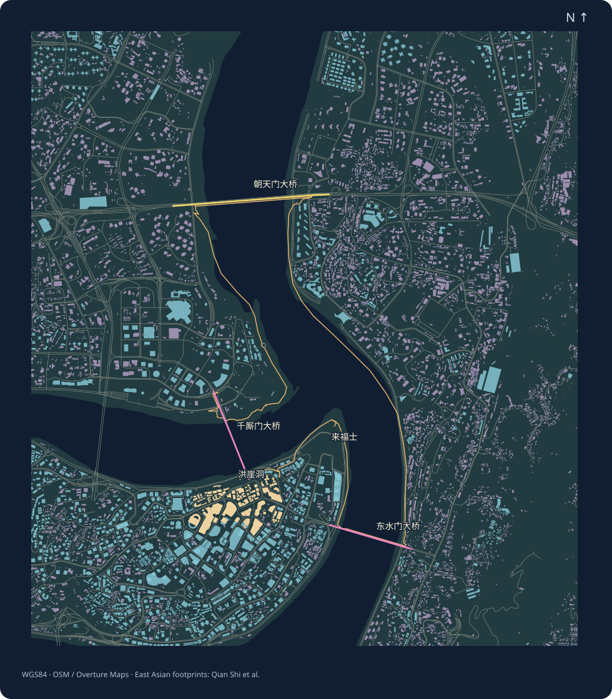

雨夜重庆
戴家巷／洪崖洞／朝天门
正在载入三维街区…
长焦 · 平面
WASD / 方向键行走 · 拖动画面转头 · 滚轮缩放
沿江街景
街景、建筑与地图依据

沿着两江，认出重庆
已扩展到整片可漫游区域的 10,123 条建筑记录，另保留洪崖洞、戴家巷及主要地标的细节模型。建筑位置采用地图轮廓和卫星影像提取数据，并对照卫星图检查区域分布；蓝色为地图建筑，紫色为影像提取建筑，金色为漫游路线。
沿江建筑分为老居民楼、砖瓦街巷、黄墙会馆、近代砖石立面和现代幕墙。近处增加窗框、窗台、空调、卷帘门、雨棚、店内陈设和铺地细节；低层历史建筑群单独校正体量。可从「沿江街景」直接到门面前行走。
千厮门、东水门：上层汽车，下层轨道 6 号线。朝天门：上层六车道，下层环线及双向两车道。列车采用钢轨、接触网和六节编组；车流为演示动画，并非实时交通。
已分出朝天门 180 米滨江层与 196 米瓮城层，参考沧白路至嘉滨路约 40 米高差；朝天门桥头通过观光电梯上下接驳。接近电梯后按 E，或点乘梯按钮。
来福士按六栋 250 米、两栋 350 米调整，大剧院最高处按 64 米调整。其他房屋优先使用地图高度和楼层；缺失部分参考邻近同类建筑估算。
场景高程是统一基准下的近似值。普通坡面、各级台阶、电梯门口及铁路下层标高仍有估算。大部分普通楼高也缺少实测资料，影像提取轮廓可能有漏检、误分和时效差异，不能视为逐栋精确复原。可核实地标采用实名，洪崖洞至朝天门段已取消重复业态招牌，区分住宅入口、商业建筑与临江挡墙。已确认店招按资料制作；没有核准的商户楼层、入口和门窗仍保留近似处理，部分米制楼高由地图层数估算，并非逐店扫描。其他街区仍有业态示意。
6 号线公轨桥依据 ↗ · 朝天门下层通车依据 ↗ · 朝天门分层依据 ↗ · 桥头电梯依据 ↗ · 来福士高度依据 ↗